Studio_X · Agent builder · implementation log
Four gaps between the builder and the reference frame, closed and shipped. One of them — agent hosting region — turned out to be a real Agora primitive nobody had surfaced yet.
This is not a wireframe invention. Agora's Conversational AI Engine accepts
properties.geofence when an agent starts, and the shape of that object drove the
shape of the control.
| Field | Values | What it forced in the UI |
|---|---|---|
area |
GLOBAL NORTH_AMERICA EUROPE ASIA INDIA JAPAN |
Six options plus Automatic — which is the absence of a geofence, not a seventh area. |
exclude_area |
The five non-global areas — valid only when area is GLOBAL |
The “Never route to” select renders only under Global. Switching away clears it, and says so. |
| unset | — | The engine picks the nearest server from the LLM endpoint's IP and fails over. So Automatic is the default, not a pinned region. |
Pinning the engine does not pin your vendors. LLM, TTS and ASR process data wherever
their endpoint lives — ElevenLabs' EU URL, for instance — and that is set on the credential,
not here. The row says so and links to Vendor Credentials, because a buyer who pins
EUROPE and assumes they are GDPR-clean has been actively misled.
First row of Deployment, above “How does your agent take calls?”. Hosting is a property of
the agent process, so it applies identically to Inbound, Batch calls and Code/SDK.
Nesting it inside a channel would imply the other two run somewhere else. It reads out in three
further places — the folded section recap (only when pinned), the review card, and the deploy
pre-flight — all from one hostingSummary(), so they cannot drift apart.
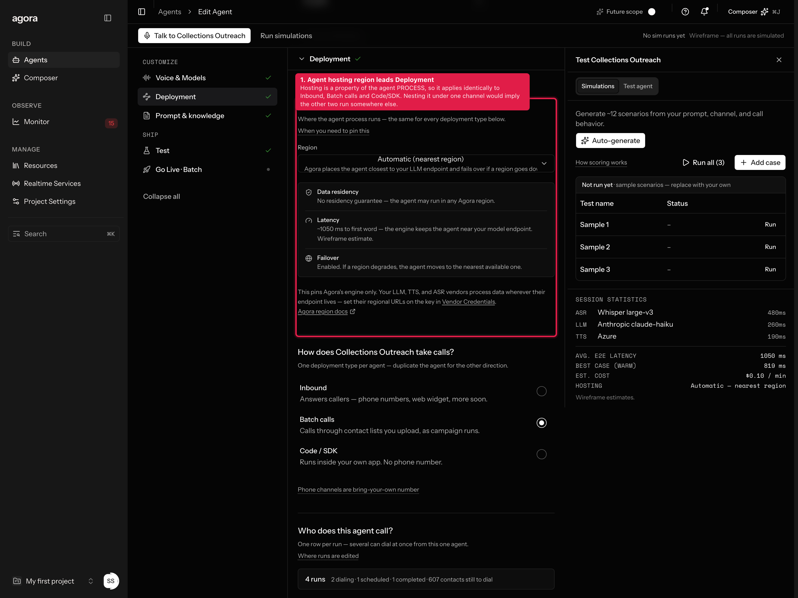
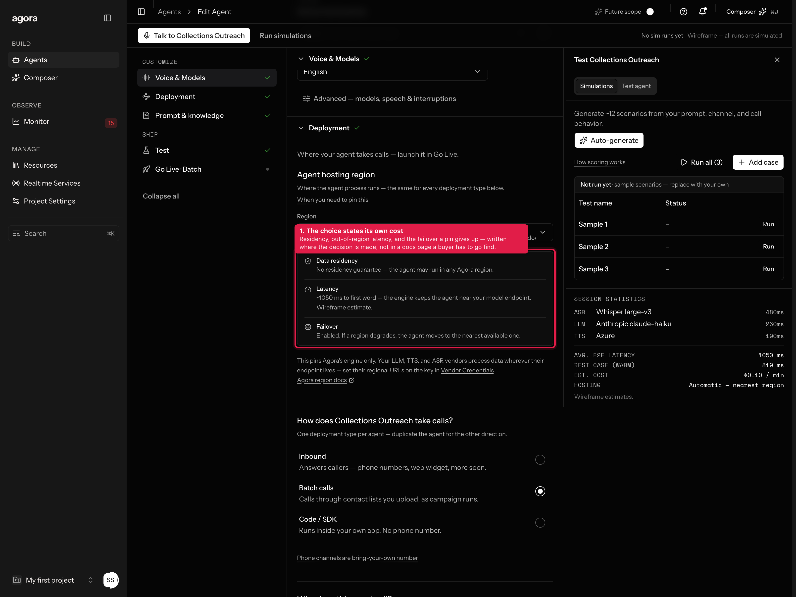
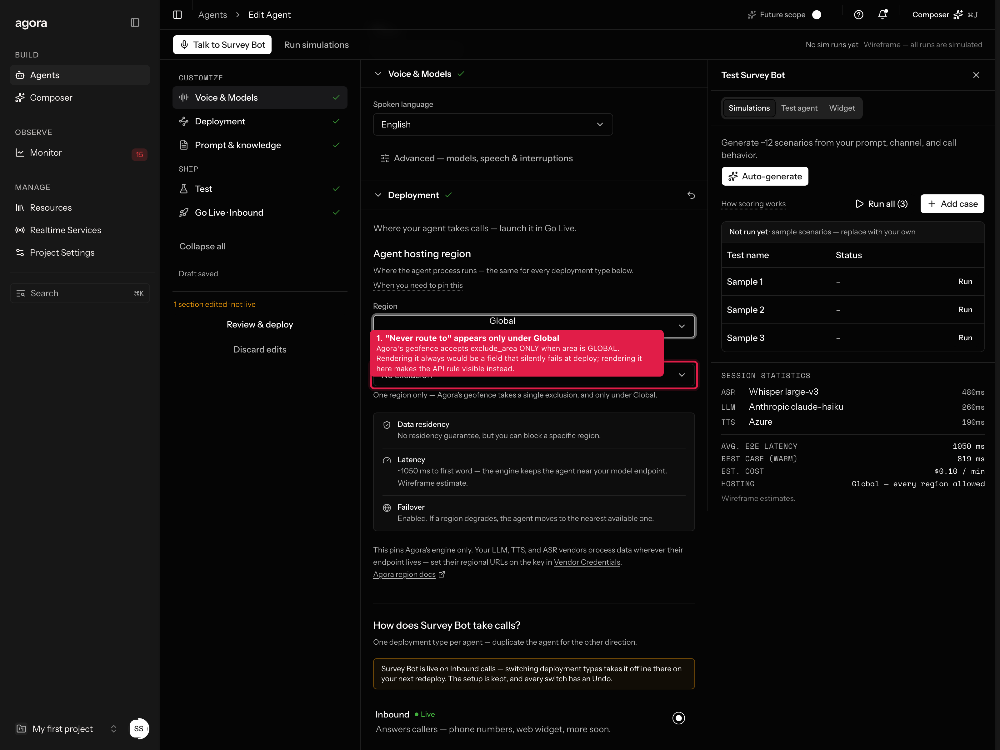
exclude_area only when area is GLOBAL. Rendering the field unconditionally would be a control that silently fails at deploy; rendering it here makes the API rule legible. Switching away from Global clears the exclusion and says so.All three radios were already there — the gap was what happened after the click. Inbound revealed a full “Link phone number” block; Batch revealed one line of grey text, and Code/SDK a bare snippet with no framing. Two of the three deployment types read as dead ends.
Batch now shows a read-only roll-up of its runs. That is deliberate: the standing rule is that campaign editing lives only in Go Live, and two editors over one object is how they drift. This is a summary with doors into the editor, not a second editor. Code/SDK gets the same framing as its peers — a labelled “Connect your app” row rather than a naked code block.
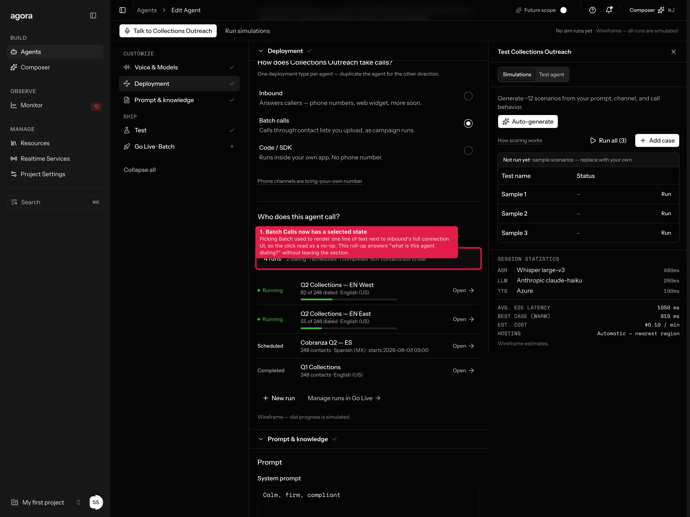
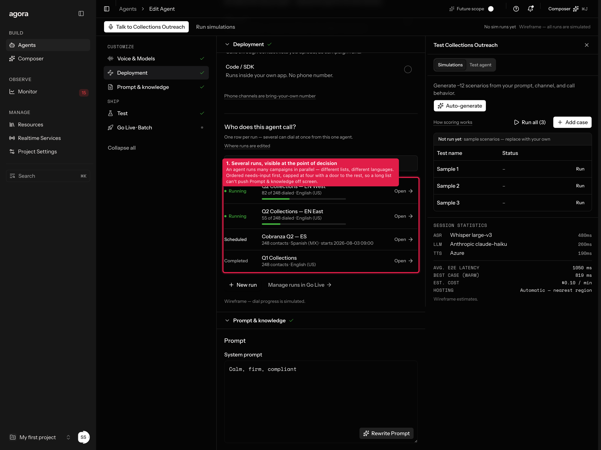
The reference frame's Campaign Runs table has two columns and a kebab. That is enough to list runs and not enough to manage them — you cannot tell which one is dialing, which is behind, or which is about to block the Deploy button.
Three additions, all read-only, all sharing one helper with the Deployment roll-up:
No Pause or Stop control on a run. A Pause in the builder was vetoed on 2026-07-21 and re-confirmed on 07-29 — pausing lives on the All Agents row. A per-run stop here would reopen that decision sideways, so it stayed out and is flagged instead.
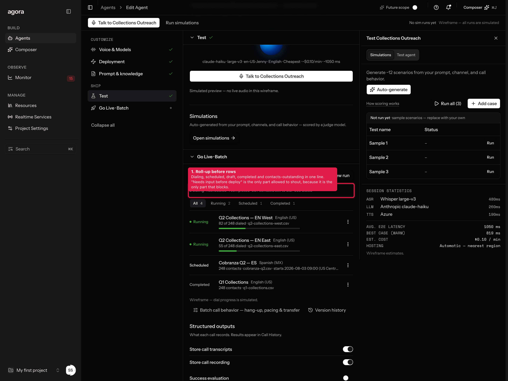
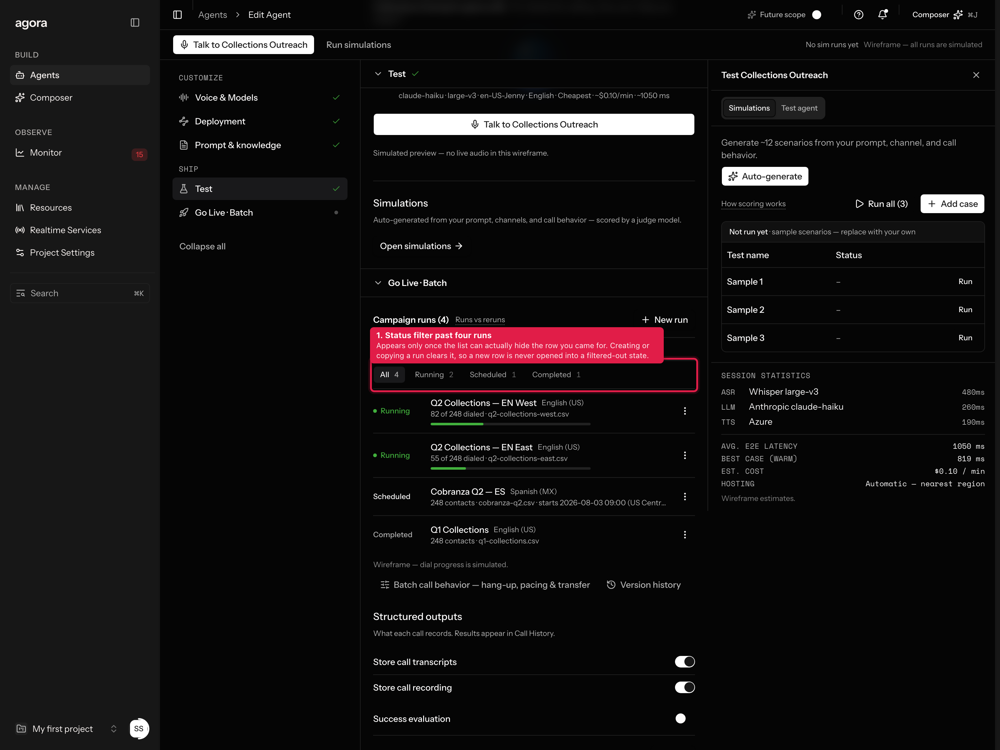
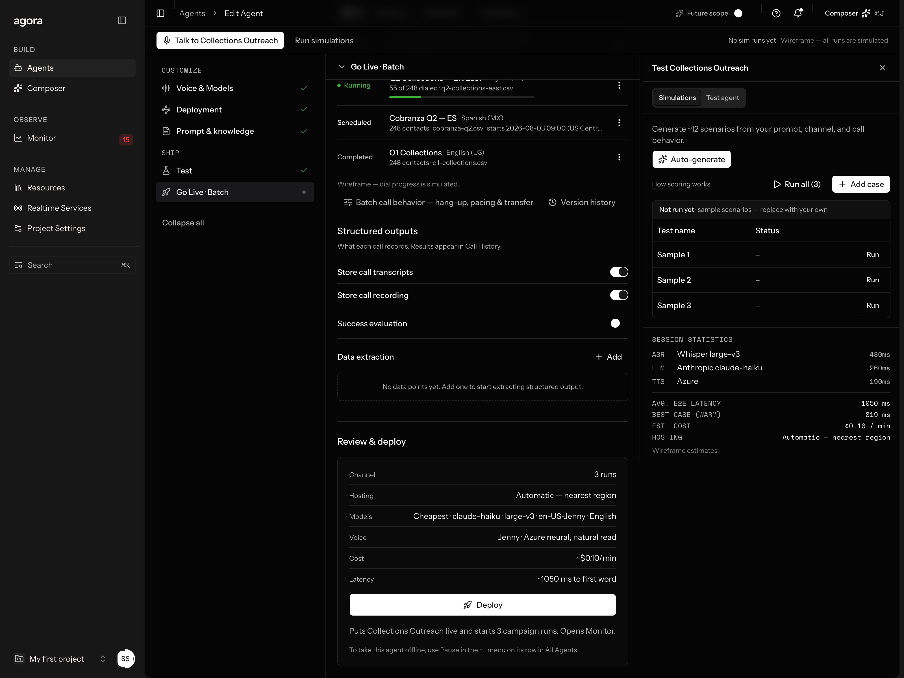
The frame shows a Simulations · Test Agent segmented control over a persistent SESSION STATISTICS footer, with only Test Agent designed. There was also a standing lock pointing the other way: the right panel is for simulations, not the agent call.
Both hold. The rail carries both tabs, and Simulations is the default — so the lock decides what you land on and the frame decides what else is reachable. Test agent is an extra door to the same mock the inline Test section drives; it shares that section's single talk flag, because two independent “is a call up?” booleans will eventually disagree on screen.
The rail now opens by default at 1024px and wider, so it reads as part of the layout rather than a surface you have to know exists. An explicit close is remembered.
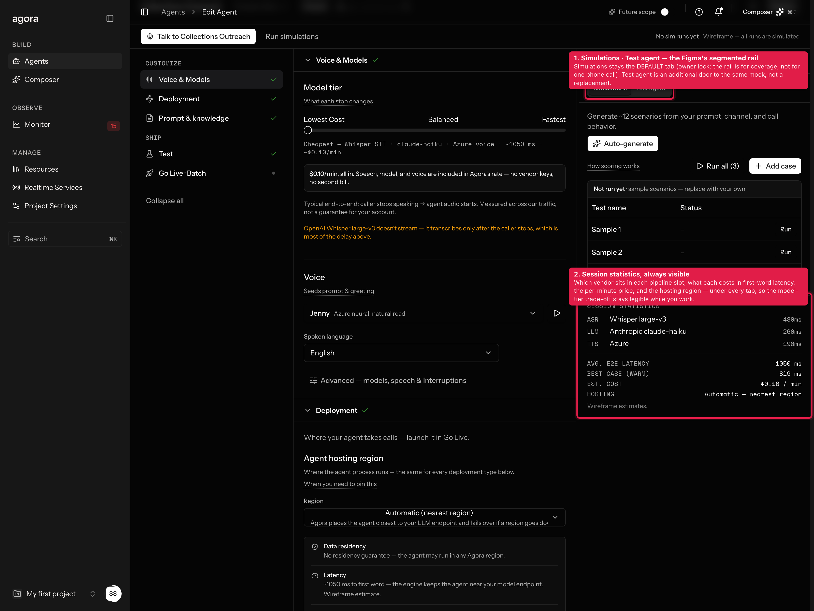
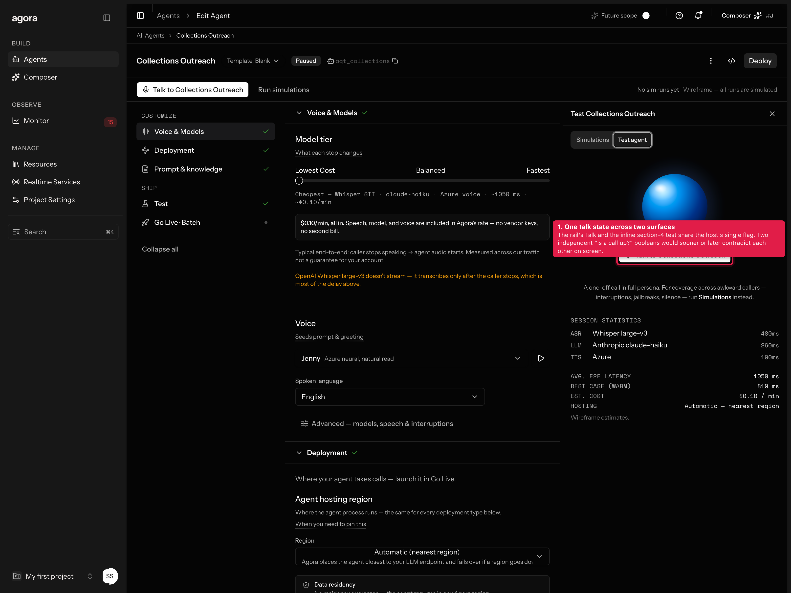
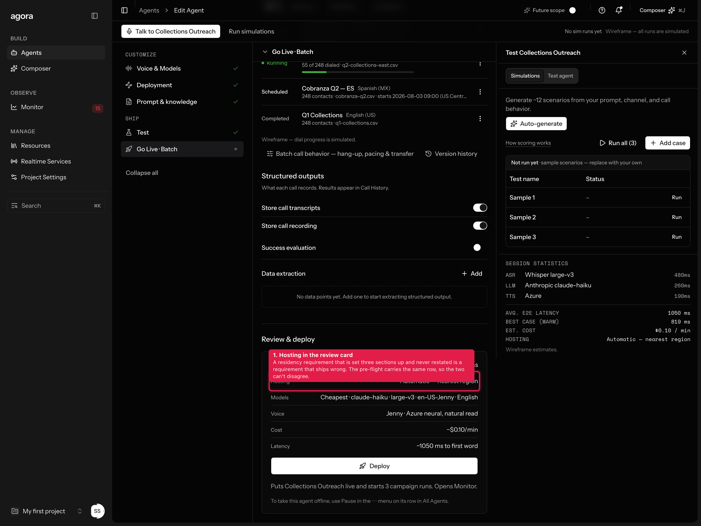
| File | Change |
|---|---|
lib/hosting-regions.ts | New. Region catalogue, the Global-only exclusion rule, hostingSummary(), normalizeHosting(). |
lib/wizard-draft.ts | hosting on the draft; campaignDialed() and campaignRollup(); migration normalises an illegal area/exclusion pair. |
components/wizard/hosting-region.tsx | New. The region row, its consequence panel, and the vendor-residency caveat. |
components/wizard/channel-section.tsx | Hosting row first; Batch runs roll-up; Code/SDK framed as a peer row. |
components/wizard/campaigns-card.tsx | Roll-up bar, dial progress, status filter, empty-filter escape. |
components/wizard/test-panel.tsx | Simulations · Test agent tabs; persistent session-statistics footer. |
components/wizard/agent-wizard.tsx | Rail open by default at lg+ with remembered close; shared talk state; hosting in the folded recap and the section-2 reset slice. |
components/wizard/step-publish.tsx · deploy-preflight.tsx | Hosting row in the review card and the pre-flight checklist. |